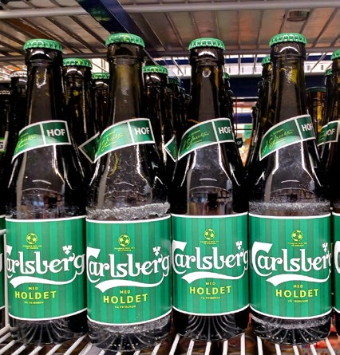
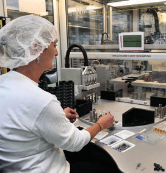

3.3 – ERHVERVSLIVET
sidde 114
FRA LANDBRUGSSAMFUND TIL VIDENS- OG SERVICESAMFUND
Ligesom de fleste andre velstående lande har Danmark gradvist udviklet sig fra at være et landbrugssamfund over til et industrisamfund og derefter i de sidste 50 år til at være et såkaldt videns- og servicesamfund. Det vil sige, at vi er gået fra en økonomi, der primært bygger på produktion af varer til i højere grad at være afhængige af højtuddannet arbejdskraft med fokus på at udnytte viden og få nye ideer samt på produktion af tjenesteydelser som for eksempel bank sektoren, it-support, forskning eller uddannelse.
Indtil slutningen af 1800-tallet arbejdede hovedparten af befolkningen inden for landbruget. Men fra 1870’erne voksede industri og håndværk hurtigt, befolk ningen flyttede fra land til by, og byerne voksede. Landbrugserhvervet forblev dog vigtigt, navnlig fordi landbrugsvarer udgjorde størstedelen af Danmarks eksport. Der blev satset på animalsk produktion som for eksempel kød, smør og ost) af høj kvalitet i regi af de mange andelsforeningers mejerier og slagterier. Helt frem til slutningen af 1950’erne udgjorde landbrugsvarer mere end halv delen af Danmarks eksport.
Landbrugsproduktionen er fortsat stor, men der er siden 1950’erne sket en voldsom effektivisering, og det er i dag kun cirka to procent af arbejdsstyrken, der arbejder i selve landbruget.
Men landbruget er stadig et vigtigt eksporterhverv. Man taler ofte i den forbin delse om en ’fødevareklynge’, fordi der er færre beskæftiget i selve landbruget og flere beskæftiget med forarbejdning, transport, salg, markedsføring og produktudvikling.
Landbruget er også på andre måder under omstilling. Landbruget har været kritiseret for at være for effektivt på en uheldig måde, blandt andet fordi der anvendes for meget gift på markerne til at slå ukrudt, svampe og insekter ihjel. Det har medvirket til en begyndende grøn omstilling, således at Danmark i dag er det land, der har den største andel af landbruget (11,1 procent i 2024) drevet som økologisk landbrug. Økologisk landbrug drives blandt andet uden brug af kemiske sprøjtemidler og kunstgødning, ligesom dyrene har bedre plads i stal dene og bedre mulighed for at komme ud i det fri.
Den første store bølge af industrialisering i Danmark skete i slutningen af 1800tallet og begyndelsen af 1900-tallet. Fremgangen fortsatte løbende men i et noget langsommere tempo indtil den anden store industrialiseringsbølge, der var fra slutningen af 1950’erne til omkring 1970. Fra begyndelsen af 1970’erne faldt andelen af beskæftigede inden for industrien, ligesom det tidligere var sket inden for landbruget. I stedet voksede servicesektoren. I dag er næsten fire ud
Læremateriale Til Indfødsretsprøven
sidde 115
af fem beskæftigede således ansat inden for privat eller offentlig servicevirk somhed (for eksempel inden for turisme, sundhedsområdet, rådgivning eller uddannelse). Omkring 30 procent af lønmodtagerne i Danmark arbejder i den offentlige sektor.
Produktionen af landbrugs- og industrivarer er dog steget, selv om antallet af ansatte er faldet. Det skyldes især mekaniseringen af produk tionen og den hurtige teknologiske udvikling i disse sektorer. Danmark har tidligere været kendetegnet ved, at de fleste virksomheder var små eller mellemstore. Det gælder for så vidt stadigvæk, men der er kommet flere virksom heder, der fylder godt op på verdensmarkedet inden for de brancher, hvor Danmark står særlig stærkt. Det gælder for eksempel føde varer, hvor mejerier og slagterier er samlet til internationale giganter: Danish Crown var i 2025 verdens næststørste svineslagteri, og Arla var i 2025 blandt de ti største mejerier. Carlsberg var i 2025 verdens fjerde største bryggeri. Carlsberg øl. Foto: Tue Schou Pedersen. Carlsberg øl. Foto: Tue Schou Pedersen.
Danmark har en stor medicinalindustri. Flere danske medicinalvirksomheder har således en stor andel af verdensmarkedet, hvoraf Novo Nordisk er den største. Placeringen af Novo Nordisk i Danmark har meget stor betydning for dansk økonomi, eksport og beskæftigelse.
Danmark fremstiller også over en tredjedel af verdens høreapparater. De tre største danske producenter GN Store Nord (GN Resound), William Demant (Oticon) og Widex er blandt de største høreapparat-producenter i verden.
Desuden er LEGO en af verdens største legetøjs koncerner. LEGO blev grundlagt i 1932 og er en forkortelse af ’LEg GOdt’. Hovedsædet ligger i Billund i Jylland. LEGO er kendt for at fremstille legoklodser i plastik.
Danmark har altid været en stor søfarts nation og havde (i 2024) verdens tiende største handelsflåde og verdens næststørste contai nerrederi i 2025 (Mærsk).
Hertil kommer virksomheder fra den grønne sektor. Danske Vestas var i 2024 verdens største vindmølleproducent. Danmark står også meget stærkt, når det gælder energibesparelser – det kan for eksempel være isolation eller ekstra energieffektive produkter.LEGO.
LEGO.
Læremateriale Til Indfødsretsprøven

sidde 116
DANMARKS SAMHANDEL MED UDLANDET
Danmark har en meget åben økonomi, hvor handel med udlandet spiller en meget stor rolle. Eksporten udgør cirka halvdelen af landets samlede produktion. Det skyldes naturligvis også, at Danmark er et lille land, og handel med andre lande – ikke mindst nabolandene – derfor fylder meget. Tyskland er det land, som Danmark importerer (køber) mest fra, og USA er det land, som Danmark eksporterer (sælger) mest til. Samlet set er eksporten til andre EU-lande dog klart større end til USA.
I 2025 var Danmarks syv største handelspartnere følgende (i deres andel af værdien af Danmarks samlede udenrigshandel (import og eksport)). USA (14,1 procent), Tyskland (12,7 procent), Sverige (7,8 procent), Holland (5,4 procent), Storbritannien (5,2 procent), Kina (4,8 procent) og Norge (4,0 procent).
Danske regeringer har i moderne tid næsten altid været tilhænger af mest mulig fri handel mellem landene. Siden 1990’erne har Danmark også klaret sig bedre i den internationale konkurrence. I samme periode har den danske eksport stort set alle år været højere end importen. Danmark er medlem af en række internationale organisationer, der ligesom EU også arbejder for mere fri handel. Det gælder for eksempel OECD (Organisationen for økonomisk samarbejde og udvikling) og WTO (Verdenshandelsorganisationen).
Den økonomiske globalisering har medført store forandringer på det danske arbejdsmarked. Mange virksomheder har flyttet dele af deres produktion til steder i verden, hvor lønnen er lavere. Ikke kun til Kina, men også til for eksempel Østeuropa eller andre europæiske lande. Indtil nu har virksomhederne dog typisk beholdt nogle vigtige funktioner i Danmark, eksempelvis udviklingen af nye produkter, salg og ledelse. Til gengæld er der også opstået nye store markeder for danske produkter.Novo Nordisk.
Novo Nordisk.
Læremateriale Til Indfødsretsprøven

Fonte: Læremateriale til Indfødsretsprøven, SIRI.